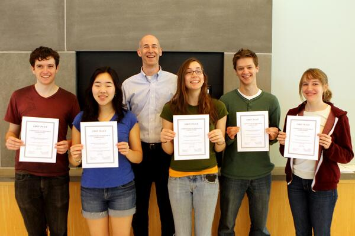

SOFTWARE SYSTEMS, FALL 2012
SUMMARY
Sandbox is an internal file system at Olin College that allows files to be stored by users for a maximum of thirty days. Our team characterized the workload on Sandbox, and used this characterization to determine a good policy for file deletion.
THE TEAM

(from left to right) Kevin O'Toole, Ariana Chae, Prof. Allen Downey, Rachel Boy, Kyle McConnaughay, Mary Ruthven
THE SKILLS
Python, MATLAB, Cache Algorithms and Replacement Policies
THE DETAILS
A history of file access was accumulated using file metadata on Sandbox, Olin's internal file system. We wrote a Python script to collect file metadata, taking measurements over the course of a few weeks.
We then compared four mathematical models of file access to determine the best fit for file access times and found that the probability of access decreases exponentially with time. Using this model of file accesses, we created a synthetic simulation of file use to analyze five file deletion policies: the current fixed-time deletion policy, three policies which use access history to better predict future access, and an omniscient policy which perfectly predicts future access.
We created a simulation with our model projected across a six-month period to determine which policy most accurately saves files when they are needed. Additionally, we evaluated these algorithms on thirty days of real access information of Sandbox files. In order to measure the performance of the various policies, we evaluated them based on maximum size used and number of failed accesses.
We found that our three new policies (least recently used, scored exponential decay and scored linear decay) each performed much better than the current policy. Of all three policies, scored linear decay performed the best overall, and also shows the most promise of guaranteeing file preservation for the user under certain conditions.
We submitted an abstract and a poster entitled, "Workload Characterization and Replacement Policies for a Shared Network Drive" to the 2013 Consortium for Computing Sciences in Colleges -- Northeastern Region and won first place in the Undergraduate Poster and Research Competition.